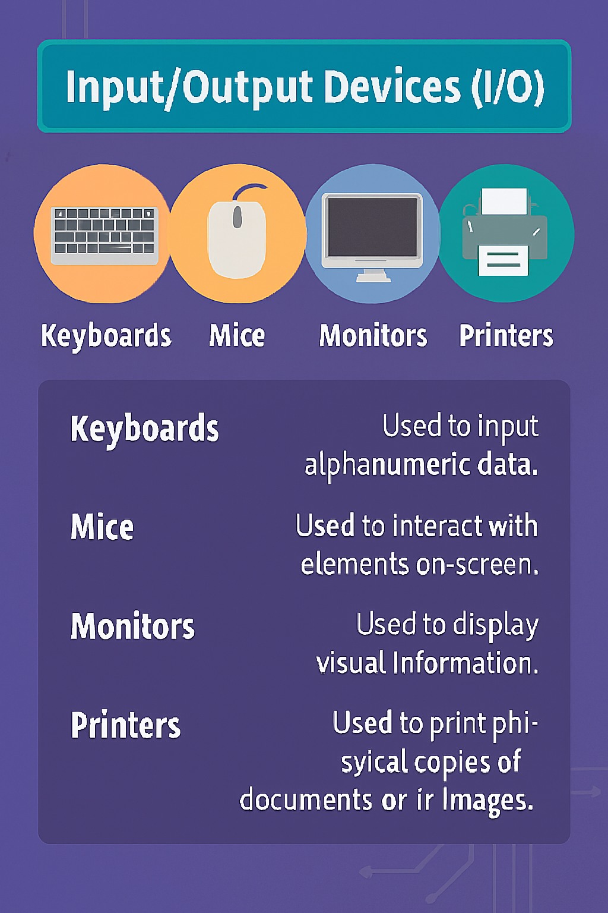
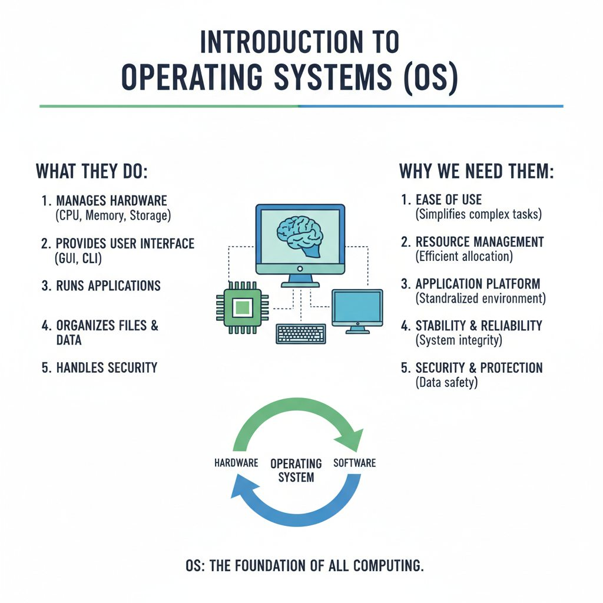
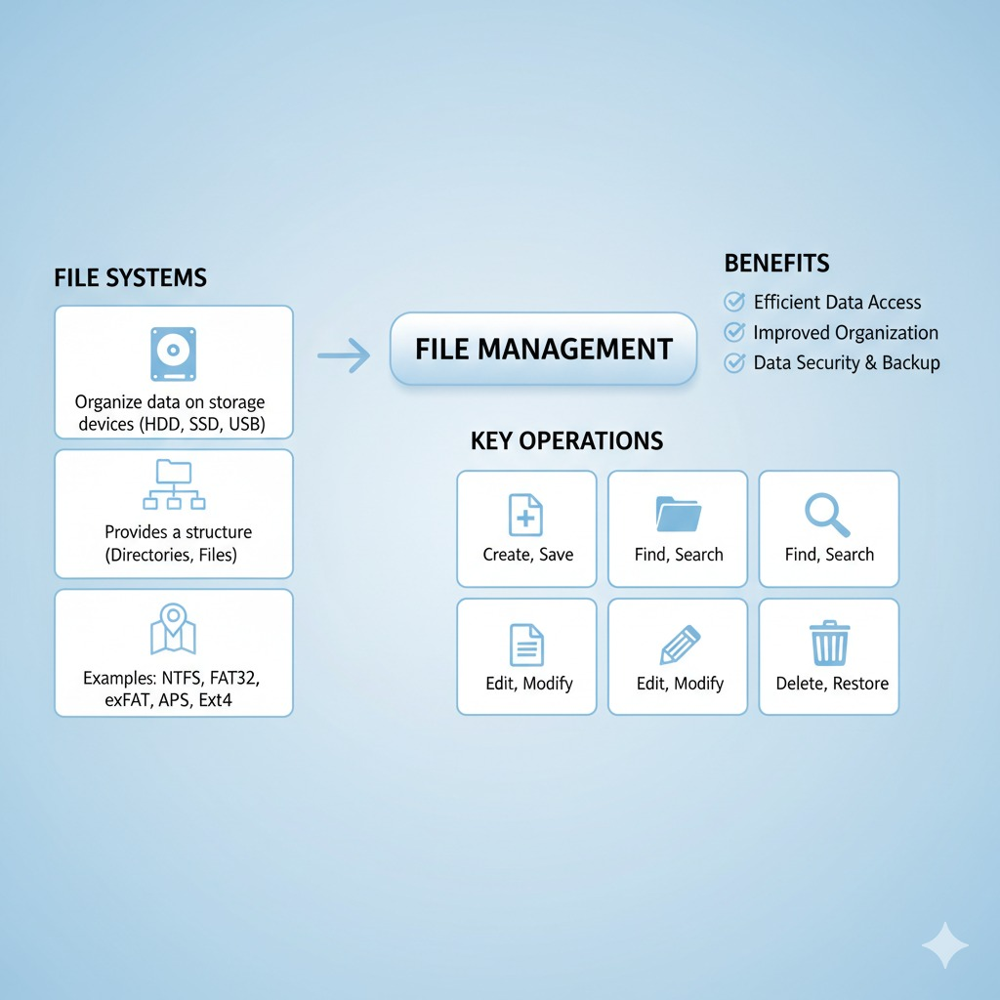
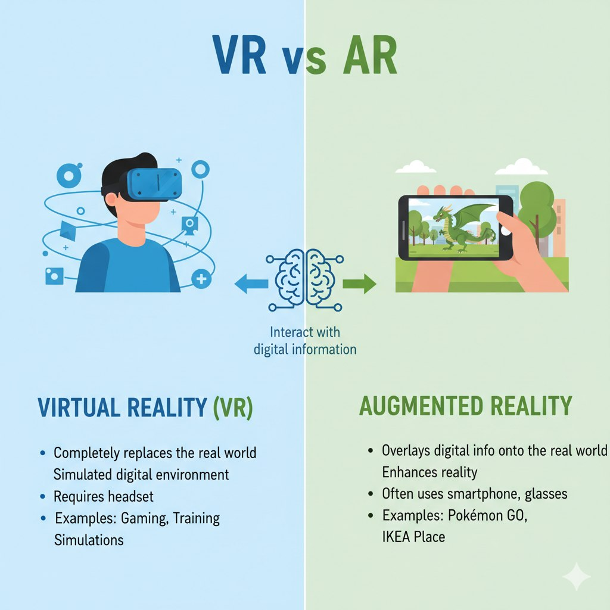
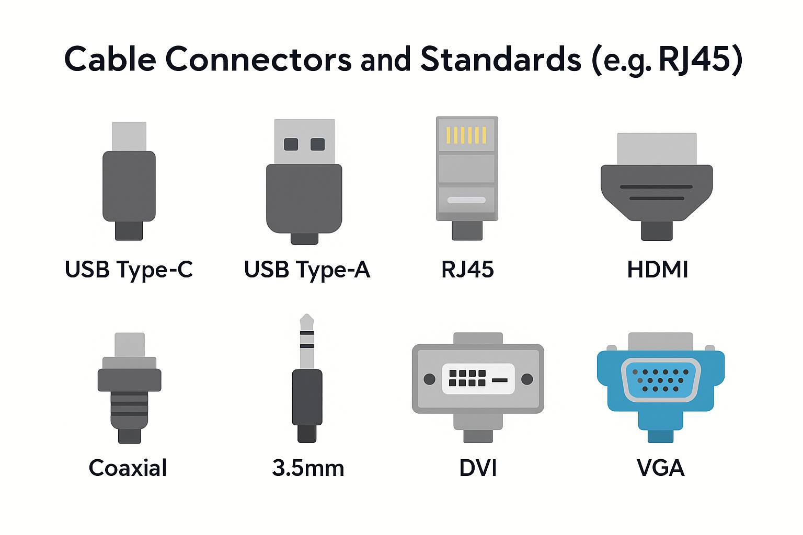
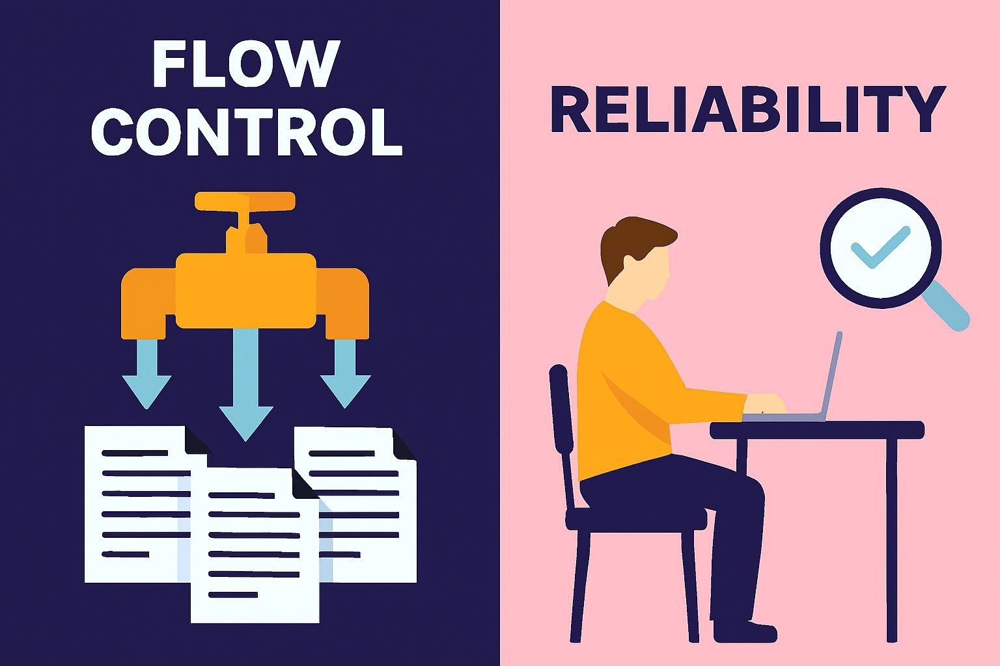
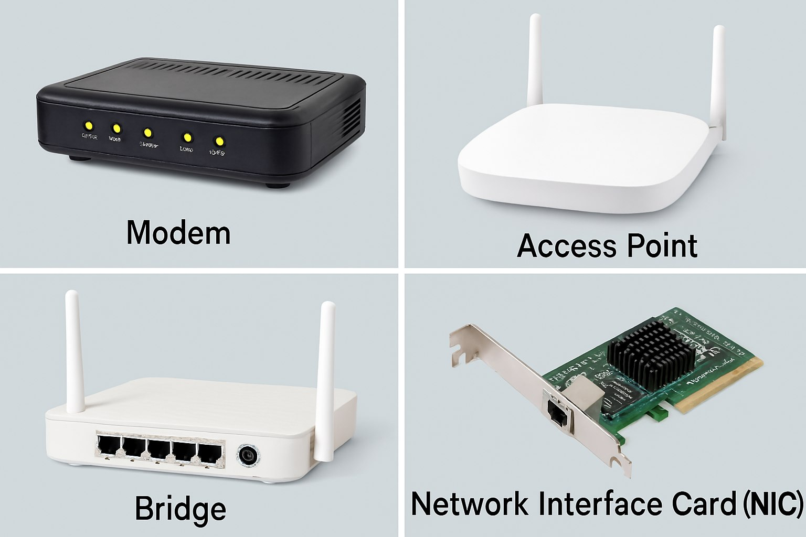

DIGITAL EDUCATIONAL GUIDE
'The Central Processing Unit'

'𝗜𝗻𝗽𝘂𝘁/𝗢𝘂𝘁𝗽𝘂𝘁 𝗗𝗲𝘃𝗶𝗰𝗲𝘀 (𝗜/𝗢)'

'Introduction to Operating Systems'

'𝗙𝗶𝗹𝗲 𝗦𝘆𝘀𝘁𝗲𝗺𝘀 𝗮𝗻𝗱 𝗳𝗶𝗹𝗲 𝗺𝗮𝗻𝗮𝗴𝗲𝗺𝗲𝗻𝘁'
'𝗢𝗻𝗹𝗶𝗻𝗲 𝗽𝗿𝗶𝘃𝗮𝗰𝘆 𝗮𝗻𝗱 𝗽𝗲𝗿𝘀𝗼𝗻𝗮𝗹 𝗶𝗻𝗳𝗼𝗿𝗺𝗮𝘁𝗶𝗼𝗻'
'𝗖𝘆𝗯𝗲𝗿𝘀𝗲𝗰𝘂𝗿𝗶𝘁𝘆: 𝗩𝗶𝗿𝘂𝘀𝗲𝘀, 𝗺𝗮𝗹𝘄𝗮𝗿𝗲, 𝗮𝗻𝗱 𝗽𝗵𝗶𝘀𝗵𝗶𝗻𝗴'
'𝗕𝗲𝘀𝘁 𝗽𝗿𝗮𝗰𝘁𝗶𝗰𝗲𝘀 𝗳𝗼𝗿 𝘀𝘁𝗿𝗼𝗻𝗴 𝗽𝗮𝘀𝘀𝘄𝗼𝗿𝗱𝘀'

'𝗩𝗶𝗿𝘁𝘂𝗮𝗹 𝗥𝗲𝗮𝗹𝗶𝘁𝘆 (𝗩𝗥) 𝗮𝗻𝗱 𝗔𝘂𝗴𝗺𝗲𝗻𝘁𝗲𝗱 𝗥𝗲𝗮𝗹𝗶𝘁𝘆 (𝗔𝗥)'
'𝗧𝗵𝗲 𝗕𝗲𝗻𝗲𝗳𝗶𝘁𝘀 𝗼𝗳 𝗡𝗲𝘁𝘄𝗼𝗿𝗸𝗶𝗻𝗴'


'Cable Connectors and Standards'

'𝗙𝗹𝗼𝘄 𝗖𝗼𝗻𝘁𝗿𝗼𝗹 𝗮𝗻𝗱 𝗥𝗲𝗹𝗶𝗮𝗯𝗶𝗹𝗶𝘁𝘆'

'𝗠𝗼𝗱𝗲𝗺𝘀, 𝗔𝗰𝗰𝗲𝘀𝘀 𝗣𝗼𝗶𝗻𝘁𝘀, 𝗮𝗻𝗱 𝗕𝗿𝗶𝗱𝗴𝗲𝘀 𝗡𝗲𝘁𝘄𝗼𝗿𝗸 𝗜𝗻𝘁𝗲𝗿𝗳𝗮𝗰𝗲 𝗖𝗮𝗿𝗱𝘀 (𝗡𝗜𝗖𝘀)'